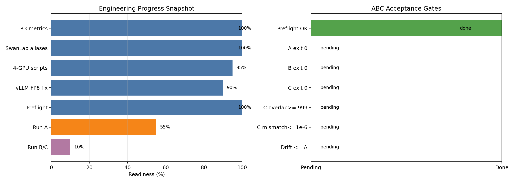

用可复核的数字描述贡献，也明确数字不能证明什么。
从问题到验证的工程闭环

工程实现与数据契约
时间：2026-06
技术栈：veRL、Megatron-LM、vLLM、PyTorch Distributed、MoE、8xH200
结论：完成 rollout route 采集、训练侧 observe/replay、response-mask 对齐和统一指标链路，并用 CPU 单测与 GPU A/B/C 实验分别验证数据契约和端到端语义。
1. 问题定义
MoE 强化学习同时包含 rollout/inference engine 和 training engine。即使两边权重相同，算子实现、并行方式和数值误差也可能让 router 的 top-k 边界发生翻转，使同一 token 在两侧进入不同 expert。离散路由变化会继续影响 hidden state 和 logprob，形成训推漂移。
Router Replay 的工程目标不是冻结 router，也不是复制 rollout logits，而是：
- rollout 时记录每个有效 token、每个 MoE layer 实际选中的 top-k expert id；
- training 时保留自然路由用于观测，按实验模式决定是否使用 rollout route；
- 只在 response token 上统计 route 和 logprob 指标；
- 用同一批数据做 baseline、observe 和 replay 对照。
2. 系统数据流
prompt / response
|
v
vLLM rollout
+-- selected token logprobs
+-- routed_experts [token, moe_layer, top_k]
|
v
rollout batch / data protocol
|
v
Megatron trainer
+-- train_routed_experts: 训练侧自然路由
+-- replay target: rollout 路由
+-- response mask: 只保留回答 token
|
v
route mismatch + logprob drift + stability metrics
routed_experts 的逻辑形状是 [T, L, K]：
- T：当前样本展平后的 token 数；
- L：MoE 层数；
- K：每个 token 选择的 expert 数；
- 值域：
[0, num_experts)的整数 expert id。
20-step 主实验每步约有 241 万至 269 万个有效 token-layer 观测点，因此 mismatch 不是少量 token 的抽样结果。
3. A/B/C 语义
| 组别 | rollout route 采集 | 训练自然 route 记录 | 训练是否 replay | 用途 |
|---|---|---|---|---|
| A baseline-observe | 是 | 是 | 否 | 测量自然训推 route divergence |
| B R2-observe | 是 | 是 | 否 | 验证“只记录、不回放”不会虚构收益 |
| C R3-replay | 是 | 是 | 是 | 验证 replay 对 route 与 logprob 的影响 |
早期实现曾把 replay target 直接作为“实际 route”参与自比较，这只能验证数据链路自一致，不能证明自然 route mismatch 消失。主结论采用 observe 口径：A/B 保存 train_routed_experts，C 才替换执行路由。
4. 工程实现要点
4.1 Rollout 侧采集
- 在模型执行期间捕获每层 router top-k expert id。
- 保证采集顺序与 rollout batch 中 token 顺序一致。
- 将 route tensor 与响应、old logprob 等数据一起传入 trainer。
- 对无 route、shape 不匹配和层数不一致设置显式错误指标，不静默吞掉异常。
4.2 Trainer 侧 observe/replay
- 自然路由始终可保存为
train_routed_experts，防止 replay 覆盖真实观测值。 - replay 模式将 rollout expert id 注入 MoE routing path；observe 模式只比较，不改变执行。
- 统计前应用 response mask，避免 prompt token 数量掩盖回答阶段的漂移。
- token、layer、top-k 三个维度统一后再计算 mismatch，避免仅比较集合导致的口径变化。
4.3 指标闭环
| 指标 | 含义 | 趋势 |
|---|---|---|
route_mismatch_rate |
rollout 与训练 route 不一致的 token-layer-topk 比例 | 越低越好 |
topk_overlap |
两侧 top-k expert 集合重合率 | 越高越好 |
f_tau_2 |
训练与推理概率比超过 2 倍的 token 比例 | 越低越好 |
kl |
两侧 token 概率分布的 KL 距离 | 越低越好 |
k3_kl |
数值更稳定的 KL 估计口径 | 越低越好 |
selected_logprob_abs_diff_mean |
选中 token 的 logprob 绝对差均值 | 越低越好 |
metric_error |
指标 shape、mask 或数据协议异常计数 | 应为 0 |
核心指标近似定义为：
f_tau_2 = mean(response_token where max(p_train / p_rollout,
p_rollout / p_train) > 2)
4.4 可观测性与失败显式化
- console 与实验面板使用同名指标，避免人工二次换算。
- 同时记录有效 token-layer 数，防止空 mask 时得到“完美的 0”。
- route tensor 缺失、shape 变化或异常值会进入
metric_error，不把异常样本当作正常 0。 - 稳定性同时记录 hang、engine error 和指标错误，避免只看最终 loss。
5. 验证策略
验证分成三层：
| 层级 | 方法 | 验收点 |
|---|---|---|
| 数据契约 | CPU 构造 tensor 与 mask | shape、层顺序、top-k、空 mask、错误分支 |
| 最小链路 | 短 step GPU smoke | route 能跨 rollout/trainer 传递，指标非空 |
| 效果对照 | 同模型同数据 A/B/C | A/B 测到自然 divergence，C replay 后为 0 |
整理时可追溯的最小观测改动覆盖 5 个文件，并有 18 个 CPU 测试通过。GPU 验证则以 5-step、20-step 和多节点 smoke 分层推进。CPU 测试证明指标实现，GPU 对照证明系统语义，两者不能相互替代。
6. 关键工程问题
| 问题 | 原因或判断 | 处理 |
|---|---|---|
| 非 Megatron 参数被透传 | 配置边界缺少过滤 | 在进入训练框架前拆分参数命名空间 |
| vLLM 开发版本号被依赖检查拒绝 | 版本字符串不满足上层约束 | 统一构建元数据与运行时版本口径 |
| route 指标看似恒为 0 | replay target 被当作实际 route 自比较 | 保存训练自然 route，升级为 observe 口径 |
rollout sample_tokens timeout |
下游报错掩盖 CUDA Graph 内部 hang | 通过控制变量缩小到 TP=2 + FULL graph 条件 |
7. 贡献状态与表述边界
- 这项工作形成了可运行实现、指标设计、测试和实验报告。
- 整理时相关目标分支已存在等价可观测能力，因此不能写成“个人 PR 已合并”。
- 可以写“实现并验证 Router Replay 与观测链路”，不写“将功能合入上游”。
- 当前证据支持 route/logprob 一致性改善，不支持直接声称 reward、准确率或收敛速度提高。
8. 可用于简历的一句话
在 8xH200 的 veRL + Megatron + vLLM MoE-RL 链路中实现 rollout route 采集、训练侧 Router Replay 和 response-mask 指标闭环，以 baseline/R2/R3 observe 对照验证自然 route mismatch 从约 17%-19% 降至 0。
实验数据和限制见 R3 实验结果公开版，CUDA Graph 排障见 R3 CUDA Graph 与集群排障公开版。
A/B/C 结果与适用边界
主实验：Qwen3-30B-A3B BF16、GSM8K、8xH200、20 steps
结论：R3 在 observe 口径下把 route mismatch 从约 17%-19% 降至 0，并显著降低多项 logprob drift 指标；当前结论不等同于最终任务效果提升。
1. 实验问题
实验分别回答三个问题：
- rollout 与 training 的自然 route 是否真的不同；
- Router Replay 是否在真实 observe 口径下消除 route divergence；
- route 对齐是否伴随 logprob drift 下降，且链路能稳定运行。
控制变量为模型、数据、精度、训练参数和硬件；A/B/C 的主要差异仅为 route 记录与 replay 行为。指标只统计 response token。
2. 20-step 主结果
| step | A mismatch | B mismatch | C mismatch | A f_tau_2 | B f_tau_2 | C f_tau_2 | C vs A |
|---|---|---|---|---|---|---|---|
| 1 | 0.190 | 0.188 | 0.000 | 3.38e-3 | 2.99e-3 | 3.94e-5 | 约 86x 下降 |
| 5 | 0.178 | 0.177 | 0.000 | 2.50e-3 | 2.67e-3 | 5.83e-5 | 约 43x 下降 |
| 10 | 0.181 | 0.181 | 0.000 | 2.14e-3 | 2.54e-3 | 3.70e-5 | 约 58x 下降 |
| 15 | 0.189 | 0.189 | 0.000 | 3.39e-3 | 3.61e-3 | 2.34e-5 | 约 145x 下降 |
| 20 | 0.172 | 0.174 | 0.000 | 3.20e-3 | 2.90e-3 | 8.94e-5 | 约 36x 下降 |
聚合观察：
- A/B 的自然 route mismatch 全程约 17%-19%，说明“只观测、不 replay”不会自动得到 0。
- C 的 mismatch 全程为 0，说明 replay route 在训练执行侧生效。
- C 的 f_tau_2 相比 A/B 低约 36x-145x。
- C 的 KL 相比 A 低约 4x-7x。
- C 的 selected logprob absolute difference 相比 A 低约 2.2x-2.5x。
- 20 step 内 0 hang、0 EngineDeadError、0 metric_error。
3. 补充实验
3.1 早期 5/25/50-step 对照
| step | baseline f_tau_2 | R2 f_tau_2 | R3 f_tau_2 | R3 vs baseline |
|---|---|---|---|---|
| 5 | 2.72e-3 | 2.65e-3 | 5.86e-5 | 约 45x 下降 |
| 25 | 2.47e-3 | 2.52e-3 | 8.34e-5 | 约 30x 下降 |
| 50 | 4.23e-3 | 2.83e-3 | 1.30e-4 | 约 32x 下降 |
这组结果采用较早的 route 指标口径，因此只作为 logprob 结论的补充，不作为自然 route mismatch 的主要证据。配套数据见 周报 CSV。
3.2 独立 15-step 对照
baseline 与 R3 的 f_tau_2 分别为 3.53e-3 和 4.58e-5，约 77x 下降。该结果说明主趋势能够在另一轮短实验中复现，但仍不替代 20-step observe 主口径。
3.3 跨模型补充
另一开源 MoE 模型的 25-step 对照中观察到约 6.6x 的 f_tau_2 下降。由于当前公开材料未保留完整逐步数据，只把它作为可迁移性的弱证据，不作为简历主数字。
4. 多节点 32 卡 smoke
4 节点 x 8 卡、TP=2、eager 口径下，R2 与 R3 均完成 5 steps：
| 指标 | R2 | R3 | 判断 |
|---|---|---|---|
| route mismatch | 0.2579 | 0 | replay 在多节点口径下生效 |
| KL | 0.00388 | 0.00089 | R3 约低 4.4x |
| throughput | 113.90 | 104.68 | R3 当前约有 8.1% 开销 |
这是一组工程 smoke，不是完整收敛实验。它能证明多节点数据链路和短程稳定性，也暴露了 replay 的吞吐代价；不能据此外推长跑 reward。
5. 结果解释
能证明
- rollout 与 training 的自然 MoE route 在当前链路中存在稳定差异。
- Router Replay 能让训练执行 route 与 rollout route 对齐。
- route 对齐与 f_tau_2、KL、selected-logprob drift 的下降同时出现。
- eager 口径下当前 20-step 链路稳定。
不能证明
- 不能证明 reward、GSM8K 准确率或最终收敛质量已经提高。
- 不能证明所有 MoE 模型、精度、并行配置都有相同比例收益。
- 不能把 32 卡 5-step smoke 写成多节点长跑完成。
- 不能忽略约 8.1% 的短程吞吐开销。
6. 简历数字建议
主简历只保留三组数字即可：
- 自然 route mismatch：约 17%-19% -> 0；
- f_tau_2：约 36x-145x 下降；
- KL：约 4x-7x 下降，20 step 内 0 hang / 0 engine error / 0 metric error。
面试展开时再补充 32 卡 smoke 的 8.1% 吞吐开销，体现对性能代价和结论边界的完整理解。
7. 证据索引
稳定性与故障定位
2026-07-15 更新：本文第 1～9 节保留 6 月阶段性排障过程；后续两卡最小复现已经把根因闭环到 FlashInfer MNNVL fused allreduce + RMSNorm 的 FTZ/sentinel 误判，并完成 PR #3304 回移与 0.6.12 回归。最新结论见 FlashInfer TP2 CUDA Graph Hang 根因与修复。
当前结论：
sample_tokens timed out是下游表象，最小触发组合为 TP=2 + VLLM_COMPILE + FULL CUDA Graph + fused allreduce/RMSNorm；旧实现的浮点 sentinel 判断会受 FTZ 影响而永久轮询，精确 bit-pattern 修复后两卡 graph replay 通过，完整大规模 RL 任务仍待最终验收。
1. 故障现象
R3 rollout 在多卡配置下偶发或稳定卡住，外层最终表现为：
- sample_tokens timed out；
- engine process 无返回或抛出 engine-dead 类错误；
- sampler、D2H copy、async output queue 或消息队列等待超时。
这些位置都在执行链后段。仅依据超时栈把问题归因到 sampler 会误判，因此排查目标是找到最后一个确定完成的 GPU 阶段和最小触发条件。
2. 控制变量矩阵
| 变量 | 对照 | 观察 |
|---|---|---|
| Tensor Parallel | TP=1 vs TP=2 | TP=2 才稳定触发 |
| CUDA Graph | eager vs FULL | eager 通过，FULL 触发 |
| Compile | off vs on | compile + FULL 组合风险最高 |
| fused AllReduce + RMSNorm | on vs guarded off | 关闭后首次通过完整 step |
| sampler / D2H | 保持不变 | 仍只是等待点，非首因证据 |
最小复现可以概括为：
TP=2
+ vLLM compile
+ FULL CUDA Graph capture/replay
+ fused AllReduce + RMSNorm candidate
=> rollout hang
3. 排查过程
- 先用 eager 证明模型、数据、权重同步和基本 TP 通信可运行。
- 固定 batch 与随机性，只切换 graph mode，确认问题与 FULL graph 相关。
- 对比 TP=1/TP=2，缩小到需要跨 rank 协同的执行路径。
- 使用 Nsys 标记 rollout、collective、sampler 和 D2H 时间线，排除后段“报错即根因”的解释。
- 对 fused pass 增加 guard，单独关闭 AllReduce + RMSNorm 融合；完整 training step 首次通过。
- 规划 standalone reproducer 与 NCU，准备验证 rank 对称性、barrier/scoreboard stall 和 memory traffic。
4. 当前结论等级
| 结论 | 置信度 | 原因 |
|---|---|---|
| sampler 不是首因 | 高 | eager 和部分 graph 对照能完成，sampler 只在上游未完成后等待 |
| 问题依赖 TP=2 + FULL graph | 高 | 控制变量可重复区分 pass/fail |
| fused AllReduce + RMSNorm 路径不可靠 | 中高 | guard-off 首次完整通过，仍需多轮回归 |
| 已定位到具体 kernel 指令或同步点 | 不成立 | 目标 NCU 和指令级证据未完成 |
因此对外准确说法是“把 hang 收敛到 fused collective + normalization 路径，并给出 eager/guard 规避方案”，而不是“修复了 vLLM CUDA Graph kernel bug”。
5. 稳定规避与验收
当前默认稳定方案是启用 eager。候选 guard 若要升级成正式方案，至少需要：
- 相同输入连续多次通过；
- FULL、PIECEWISE 和组合 graph mode 的最小回归；
- R3 5-step 以上端到端回归；
- 性能差异与正确性指标同时记录；
- 两个 TP rank 的行为对称性验证。
一次通过只提高嫌疑路径的置信度，不能作为修复完成的依据。
6. Checkpoint 与恢复
多节点实验将“训练状态”和“可观测产物”分开管理：
| 产物 | 用途 | 能否恢复训练 |
|---|---|---|
| model/optimizer/scheduler checkpoint | 恢复训练状态 | 是 |
| console / tracking metrics | 观察趋势 | 否 |
| rollout dump | 调试输入输出 | 否 |
| Nsys / NCU profile | 定位性能和 hang | 否 |
推荐恢复流程：
- 长跑前做 2-step 保存与恢复 smoke；
- 验证 checkpoint 完整性和 step 编号；
- 中断前确认最新 checkpoint 已落盘；
- 恢复时复用同一实验配置，只改变 resume 参数；
- 对比恢复前后 loss、global step、optimizer state 和 route 指标连续性。
自动恢复只应选择同一实验实例下的有效 checkpoint，不能扫描并误用其他实验目录。
7. 集群观测结果
对两组集群运行记录的对比表明：
- eager/no-resume 组可以完成 5-step smoke；
- fullgraph + checkpoint 组合出现过 Ray memory pressure 和 OOM；
- profiling 能解释资源和时间线，但本身不会修复稳定性问题；
- graph mode、checkpoint 峰值和对象存储/日志开销需要分别控制，避免同时引入多个变量。
8. Profiling 产物状态
已生成并验收一份覆盖完整 rollout 的 fixed-path Nsys；早期 fused-on trace 因 guard 实际生效，不能作为 fused kernel 证据。standalone reproducer 已准备，目标 NCU 尚未形成，因此报告保留“待验证”状态。早期 Nsight 状态图与最终周报不一致，未纳入公开归档。
9. 面试展开框架
- 现象：外层 sampler timeout，但错误点不等于首因。
- 方法：用 TP、graph、compile、fusion 四个维度做控制变量矩阵。
- 结果：先收敛到 TP=2 + FULL graph 下 fused AllReduce + RMSNorm，再用两卡 graph reproducer 和 SASS 对照定位 FTZ/sentinel 误判。
- 处置：回移精确 bit-pattern 修复并验证新版 FlashInfer；完整大规模 RL 任务仍保留最终验收边界。
- 工程化：补 checkpoint smoke、恢复 SOP 和 profile 产物验收，降低多节点实验重跑成本。
可证明路由执行路径和多项 logprob 指标显著对齐；不能据此声称 reward、准确率或最终收敛质量已经提高。32 卡结果是 5-step smoke，并存在约 8.1% 的短程吞吐开销。